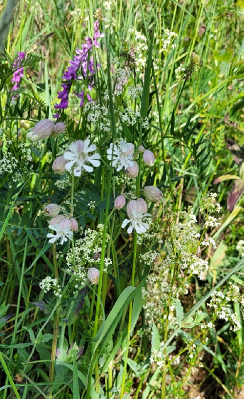
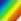
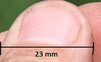
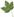
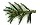
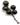
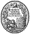

Mode d'emploi des "fiches" de chaque fleur
Trouver une fichePrésentation d'une fichePictogrammesEtymologie

Diversité florale :
Vicia tenuifolia, Silene vulgaris, Galium mollugo
Lucy-le-Bois, mai 2026 © Claire Martin-Lucy
FLeurs SauVages de l'Yonne et d'ailleurs
souhaiterait permettre à tout un chacun ayant croisé par hasard un végétal d'en savoir un peu plus que son seul nom indiqué par les applications de reconnaissance visuelle pour smartphones, désormais très répandues.
Pour ce faire, le présent herbier en ligne utilise des "fiches" indiquant, entre autres, l'origine supposée des noms de genre et d'espèce et quelques détails caractéristiques concernant le végétal en question. Mais des erreurs sont possibles qu'un botaniste amateur peut corriger en observant les fleurs peu à peu autrement.
Certes son nombre de "fiches" est très réduit en comparaison des résultats des bases de données institutionnelles générées par les caméras, les drones et les satellites qui capturent désormais des images haute résolution de la Nature. Vicia tenuifolia, ci-dessus mentionnée, en est un exemple : sa "fiche" n'existe pas encore sur FLSVY.
Trouver une fiche
Les "fiches" de FLSVY peuvent s'atteindre de différentes façons :
- Soit, quelle que soit la page, en recourant au menu par un clic sur l'icone

FLSVY ne les utilise pas. Non pour des raisons polémiques mais pour la simple raison que ce symbole est utilisé en Botanique pour indiquer les synonymes nomenclaturaux (également qualifiés d'homotypiques).
| [...] C’est un grand agrément que la diversité. Nous sommes bien comme nous sommes. Donnez le même esprit aux hommes ; Vous ôtez tout le sel de la société. L’ennui naquit un jour de l’uniformité. Antoine Houdar de la Motte (1672-1731) Fables nouvelles, 1719 |
- Soit par le nom latin, français ou vernaculaire d'une fleur, d'une poacée ou d'une plante sans fleur.
- Soit grâce aux listes de certaines plantes n'ayant pas de pétales colorés, comme par exemple :
 les Poaceae,
les Poaceae,
et les végétaux sans fleurs :
indiqués en bas de chaque page par cette minuscule fronde de fougère
Il s'agit alors des sphaignes et mousses, des hépatiques, des lycopodes, des ophioglosses, prêles et fougères ou des lichens (ces derniers du domaine de la Mycologie). - Soit en fonction de la couleur approximative d'une fleur (car les pétales des fleurs présentent des nuances de couleurs d'une infinie variété) si elle est en ligne dans le présent herbier. Pour atteindre ces couleurs, il suffit de cliquer sur l'étoile se trouvant au bas de chaque page. Et vous pourrez ensuite cliquer sur une couleur, en zoomant si besoin.
 | ||||
|
 |
||||||||||
| Cliquer sur une couleur | ||||||||||
Par exemple sur la couleur rose.
La fleur cherchée, pourquoi pas la pariétaire de Judée, en latin Parietaria judaica (trouvée grâce à CTRL+F ou Rechercher sur la page) se trouvera parmi les fleurs de couleur rose classées par famille ; dans son cas, la famille des Urticaceae qui se retrouve elle-même parmi les familles de l'ordre botanique auquel elle appartient, celui des Rosales.
Présentation d'une fiche
Chaque fleur se trouve sur une page pouvant être considérée comme une "fiche" avec description et illustrations (certes pas toujours de bonne qualité mais pouvant aider à la détermination), qui donne également accès aux noms des fleurs de la même famille (présentes dans l'Yonne et donc icaunaise, ou parfois ailleurs) en cliquant sur le nom de sa famille (éventuellement de sa sous-famille ou de sa tribu).
Mais comme un nom scientifique seul n'est pas suffisant pour désigner un taxon sans ambiguïté, il est suivi du ou des noms des botanistes ou naturalistes ayant forgé son nom ou décrit la plante au cours d'une année bien déterminée (ici 1913) comme vous pouvez le voir après Alliaria petiolata dont la fiche vous permettra d'en savoir plus sur Fridiano Cavara (1857-1929) et Loreto Grande (1878-1965) en cliquant sur l'autorat de cette plante (pas forcément en français... si rien n'existe de vraiment intéressant dans cette langue devenant du franglais mais que vous pourrez traduire facilement avec les outils existant en ligne).
Au bas de chaque page "fiche" concernant une fleur, vous pourrez accéder aux noms des espèces de fleurs du même genre qu'elle au sein de sa famille, dès lors qu'elle ne sera pas la seule présente de ce genre dans l'Yonne, comme par exemple au bas de la page de Malva setigera, la mauve hérissée :
Voici notre échelle (légèrement inférieure au pouce anglais de 2,54 cm)
pour les fleurs de petite taille lorsqu'elles sont agrandies :

Une même espèce végétale peut présenter des fleurs de plusieurs couleurs possibles.
Ces couleurs approximatives se retrouvent à gauche de son nom dans la liste correspondant à sa famille, comme par exemple :
- dans la famille des Brassicaceae,

 Cardamine pratensis
Cardamine pratensis - ou dans celle des Caprifoliaceae,
 Centranthus ruber subsp. ruber.
Centranthus ruber subsp. ruber.
Pictogrammes utilisés
Pour éviter les mots et permettre une lecture plus rapide dans un domaine aussi varié que celui de la Botanique, voici les pictogrammes utilisés par FLSVY :
Les espèces végétales peuvent être ligneuses.
 | Cette feuille, éventuellement suivie |
| | de la ou des couleurs des fleurs, indique soit une espèce de sous-arbrisseaux, soit une espèce d'arbres. |
 | précède les noms des arbres des familles suivantes nommées Pinaceae, Cupressaceae, Taxaceae et Araucariaceae. |
Les arbres dit de 3ème grandeur et les arbustes (parfois considérés comme des arbres étant donnée la hauteur qu'ils atteignent) se présenteront ainsi :
- dans la famille des Celestraceae,

Euonymus europaeus
Et les arbrisseaux, dont la couleur des fleurs est plus facilement visible que celle des arbres, comme ceci :
- dans la famille des Rosaceae Rubus caesius.
| indique une espèce protégée en Bourgogne par un arrêté du 27 mars 1992. |
|
| icone cliquable en haut des pages, attire l'attention sur la toxicité éventuelle de la plante présentée. |
|
 | renvoie à la Liste des Espèces Végétales Protégées sur l'Ensemble du Territoire Français Métropolitain par un arrêté du 20 janvier 1982. |
| Sur quelques pages, cette petite fleur bleue aura pour rôle d'attirer votre attention pour approfondir un sujet. |
Dans FLSVY aucun lien url n'est souligné. Il ne l'est qu'en glissant dessus car c'est sa couleur qui l'indique.
Certains mots sont colorés et donc clicables, comme vous avez pu le remarquer ci-dessus. Des boutons clicables se présentent également avec ou sans flèche :


Ces deux pictogrammes (même lorsqu'ils ne sont suivis d'aucun titre) indiquent la possibilité de faire plus que seulement lire les pages de FLSVY
- Les feuilleter en musique ---avec un "clic droit" ou une longue pression (tap-and-hold, équivalent à un clic droit de souris d'ordinateur) et le paramètre "écoute en arrière-plan", à condition d'avoir la bonne version d'Android---
- Quitter cet herbier en musique ou en chanson
- Voir ou d'écouter quelque chose d'éventuellement intéressant.
 La fleur que tu m'avais jetée
La fleur que tu m'avais jetée
 Métier : botaniste
Métier : botaniste
Etymologie
Si les végétaux nous offrent une diversité infinie et complexe de tailles, de formes, de couleurs, etc. et si leur période de floraison est approximative, d'autant plus qu'au XXIe siècle, plus que jamais apparemment, les perturbations humaines et climatiques ainsi que les variations météorologiques se multiplient, l'étymologie des noms des végétaux est elle aussi complexe.
L'étymologie de leurs noms latins n'est souvent que symbolique ou très compliquée, d'où l'origine supposée indiquée de ces noms dans les fiches que vous parcourerez.
Il peut s'agir :
- d'une dédicace à un botaniste pas forcément très connu comme, par exemple, Sir Thomas GAGE of Hengrave de la Gagea villosa
- de plusieurs possibilités d'origine, comme dans le cas d'Atocion armeria
- et de tant d'autres choses encore que nous avons tenté d'éclairer en recourant à des textes anciens grâce à des liens url vers les ressources numériques de la Bibliothèque nationale de France (BnF) ou d'autres bibliothèques dans le Monde.
L'étymologie de leurs noms français sert souvent à peu de chose pour en comprendre leur sens botanique. Mieux vaut dans ce cas se référer d'abord à l'usage qui en est fait dans le langage courant.
 | |